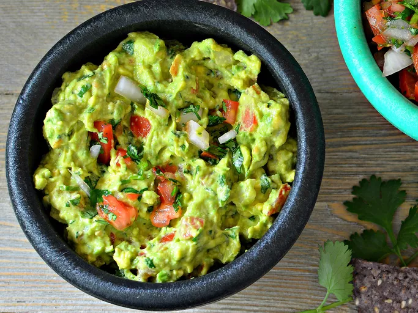

Guacamole

Description
Guacamole is an avocado-based dip or spread that originated in Mexico.
It's typically made with mashed avocado and lime juice, then seasoned with salt and cilantro. Guacamole often contains tomatoes and onions.
Ingredients
- 3 avocados
- 1 lime
- 1 teaspoon of salt
- 2 roma tomatoes, diced
- 1/2 cup diced onion
- 3 tablespoons chopped fresh cilantro
- 1 teaspoon minced garlic
- 1 pinch ground cayenne pepper (optional)
Steps
- Mash avocados, lime juice, and salt together in a medium bowl; mix in tomatoes, onion, cilantro, and garlic. Stir in cayenne pepper.
- Serve immediately, or cover and refrigerate for 1 hour for improved flavor.